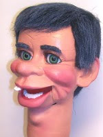

Wig Question
6/10/2011
{kind=link}

Question: I'm working on a project now and I was hoping you could assist me with sourcing where I could find a wig in this type (see photo). The character I'm working on is an old man and will need eyebrows and hair similar to this. Matthew
* * * * *
From Mr. D: I wigged the figure in the photo you sent. And I made the wig of long fake fur (found at Michaels, Joanns, etc.). The wig is two piece, the first wrapped around the sides and back of the head. The second covering the top. The fur material is glued in place with hot glue around the edges. I cut and fit as I glue the material to the head. After both pieces are in place, I comb, trim and style.
The fur purchased for this wig was solid color black. The silver/gray streaks in the black hair are actually acrylic paint which I applied using what I call a "dry brush" technique. And I do this to the fur before I start cutting out the wig.
Eyebrows are made of the same fur. I use clear Duco brand cement to hold the individual hairs of the eyebrows in place.